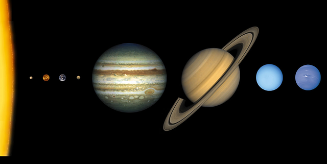
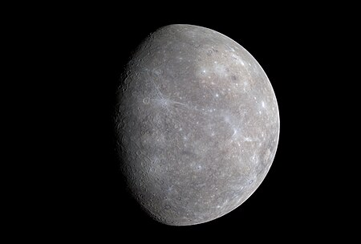
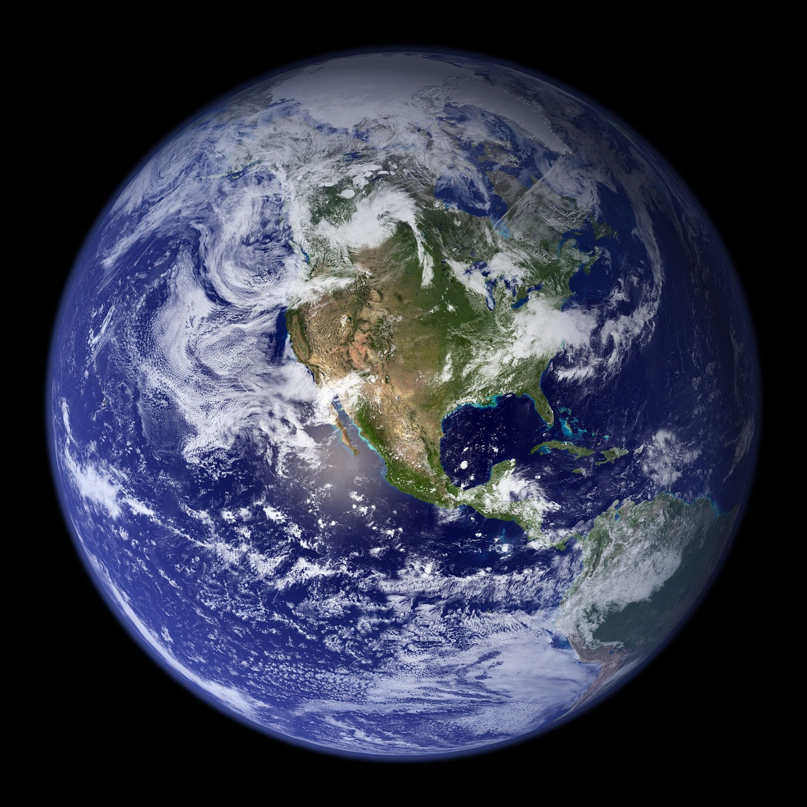

Solar System

about solar system
태양계(太陽系)는 항성인 태양과 그 중력에 이끌려 있는 주변 천체가 이루는 체계를 말한다. 태양을 중심으로 공전하는 행성은 소행성대를 기준으로 안쪽에 있는 네 개의 고체 행성인 수성, 금성, 지구, 화성, 즉 지구형 행성과, 바깥쪽에 있는 네 개의 유체 행성인 목성, 토성, 천왕성, 해왕성, 즉 목성형 행성으로 알려져 있다.
Mercury

Mercury
수성(水星, 라틴어: Mercurius)은 태양에서 평균 5,800만km 떨어져 태양계의 행성 중 가장 가까운 궤도를 도는 행성이다. 반지름은 2,440km, 둘레 43,924km로 가장 작은 내행성이기도 하다. 공전 주기는 88일, 자전 주기는 58일이며, 밀도는 5.427g/cm3이다. 핵은 수성 전체 반지름 70 % 이상을 차지하고 철을 주성분으로 할 것으로 추정된다.규산염으로 구성된 맨틀이 그 바깥을 차지한다.
Venus

Venus
금성(金星, 라틴어: Venus)은 태양계의 두 번째 행성이다. 태양 주위를 224일 주기로 돌고 있는데 반해, 자전 주기는 243일로 공전주기보다 길다. 달에 이어서 밤하늘에서 두 번째로 밝은 천체이다. 가장 밝을 때의 밝기는 -4.5등급이다. 금성의 명칭은 오행 중 하나인 '금(金)'에서 유래하였으며, 태백성(太白星)으로도 불렸다. 금성은 그 출현 시간에 따라 다른 이름으로 불렸는데 저녁 무렵에 나타나는 금성을 장경성, 개밥바라기라고 부르고 새벽 무렵에 나타나는 금성을 샛별 혹은 명성이라 불렀다. 서양에서는 로마 신화의 미를 상징하는 여신의 이름을 따라 비너스(Venus)라 부른다.
Earth

Earth
지구(地球, 영어: Earth)는 태양으로부터 세 번째 행성이며, 조금 두꺼운 대기층으로 둘러싸여 있고, 지금까지 발견된 지구형 행성 가운데 가장 크다. 지구는 45억 6700만 년 전 형성되었으며, 용암 활동이 활발했던 지구와 행성 테이아의 격렬한 충돌로 생성되었을 달을 위성으로 둔다. 지구의 중력은 우주의 다른 물체, 특히 태양과 지구의 유일한 자연위성인 달과 상호작용한다. 지구와 달 사이의 중력 작용으로 조석 현상이 발생한다.